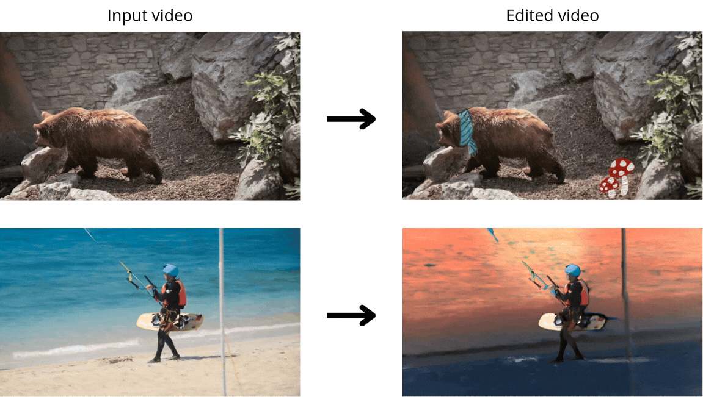
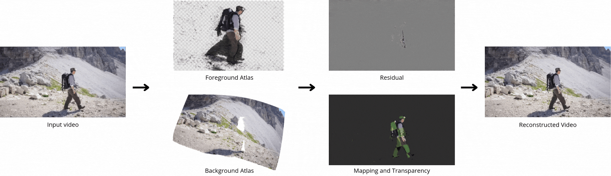
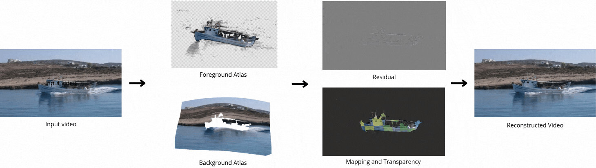
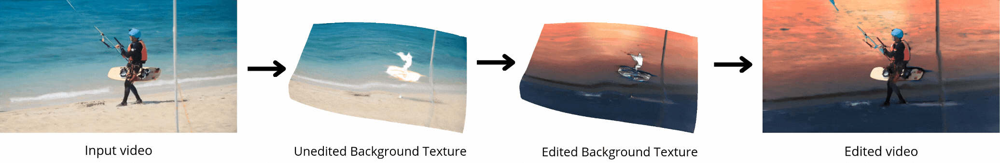
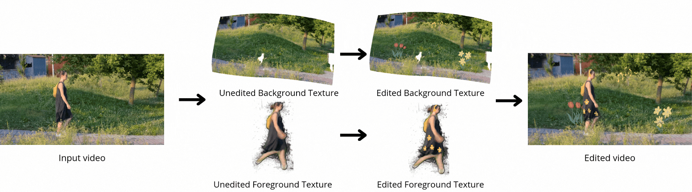

|  |
Abstract
Decomposing a video into a layer-based representation is crucial for easy video editing for the creative industries, as it enables independent editing of specific layers. Existing video-layer decomposition models rely on implicit neural representations (INRs) trained independently for each video, making the process time-consuming when applied to new videos. Noticing this limitation, we propose a meta-learning strategy to learn a generic video decomposition model to speed up the training on new videos. Our model is based on a hypernetwork architecture which, given a video-encoder embedding, generates the parameters for a compact INR-based neural video decomposition model. Our strategy mitigates the problem of single-video overfitting and, importantly, shortens the convergence of video decomposition on new, unseen videos.
Video Decomposition
|  | |||
|  |
Model Architecture
Our model is based on a hypernetwork architecture which, given a video-encoder embedding, generates the parameters for a compact INR-based neural video decomposition model.Editing examples
|  | |||
|  |